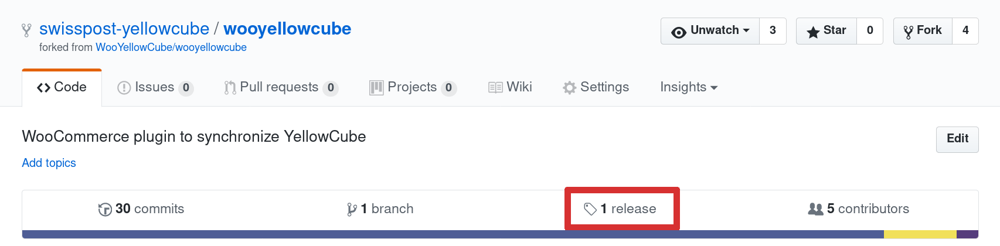
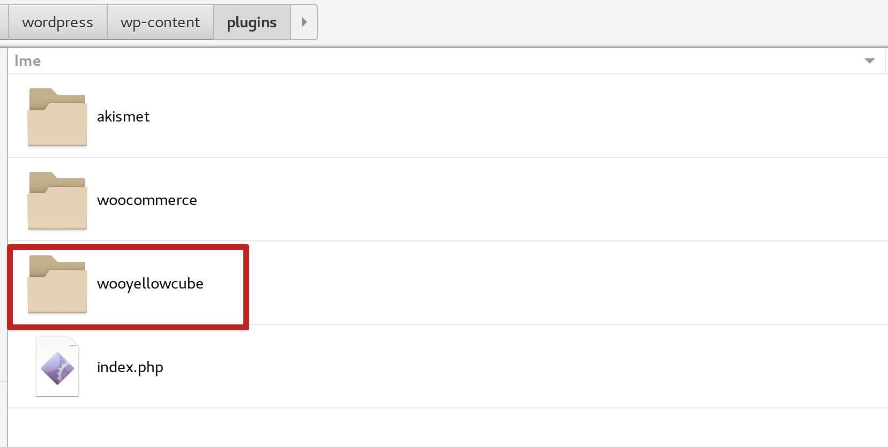
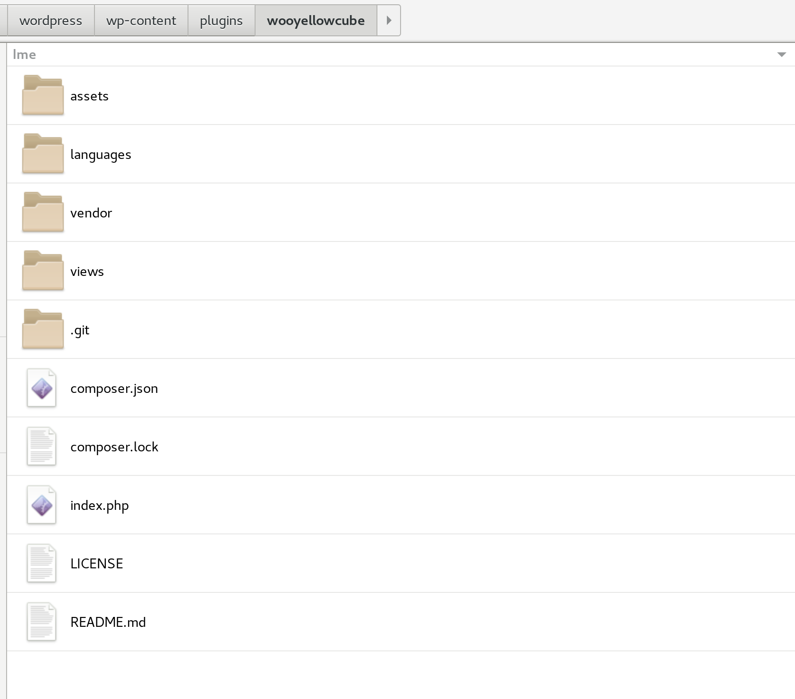
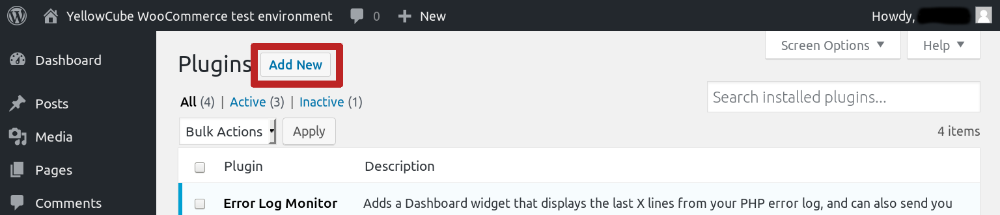
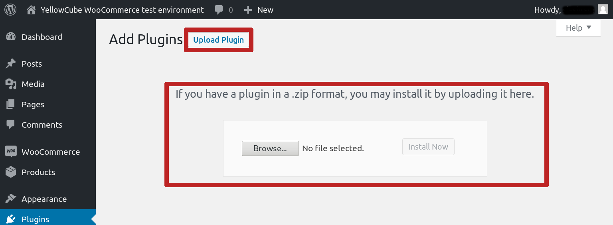
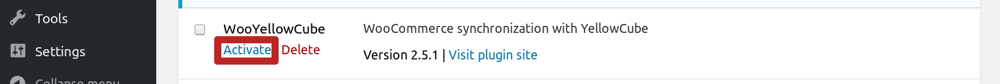
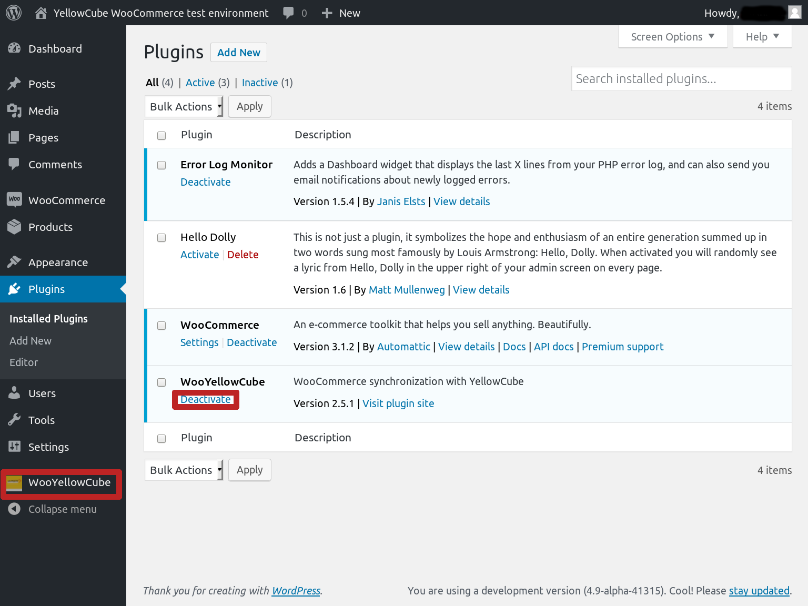

Installation
Getting the plugin
Upon installing Wordpress and WooCommerce you'll proceed with WooYellowCube installation.
First you will need to download the latest version of the plugin from its GitHub page. You will find the download packages in the releases section:

On the Releases page you will see the entire history of WooYellowCube releases and you will generally want to use the latest version (top on the list). Plugin package can be obtained through the links in the Downloads section.

Installation
Once you've successfully downloaded the package you will need to extract it into the site's directory structure. There are currently two ways to do that.
Manually
All Wordpress plugins are located under the wp-content/plugins/ directoy and the same is the case with the WooYellowCube. You should extract the
package that you downloaded in the previous step and move its contents into the plugnis directory.
If you've done this correctly you should have wooyellowcube inside the wp-content/plugins directory:

and file structure inside it that looks similar to this:

Depending on your hosting environemnt you will be required to use different tools to achieve this step (FTP, SSH, Git or ther type of version control, ...). Consult your hosting provider if you are unsure about this.
Using the admin interface
This method required web server to have write access to the plugin directory and define('FS_METHOD', 'direct'); to be
set in the wp-config.php.
You should navigate to Plugins section of the Wordpress administration pages and click on the Add new button:

This will take you to the plugin installation page where you are able to install plugins from the Wordpress plugin directory. Alternatively it is also possible to upload package that was downloaded in the first step. This can be achieved by pressing the Upload button and using the upload widget that shows up.

Please note that the upload widget only supports packages in .zip format so you need to make sure that you downloaded
the correct package.
It is worth mentioning that the WooYellowCube plugin currently isn't available from the Wordpress plugin directory. We are aware that this would simplfy the installation process significantly and are currently working on getting it included. We will update this document as soon as this is achieved.
Activation
Once the plugin was successfully installed it will appear in the listing that is displayed in the Plugins section of the Wordpress administration pages.
Plugin can be activated by clicking on the Activate link next to it.

Once the plugin has been successfully activated the Deactivate link will appear next to it and the WooYellowCube section will become available in the administration menu.
